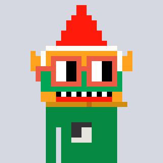

NOUNS GARDEN
A LITTLE MATCHING GAME ✳
Good things
grow together.
A garden full of Nouns. A little room to play.
GARDEN01
YOUR GOAL

0 / 12MOVES LEFT20
POINTS0
Tap two neighbors or swipe to swap.
MATCH THREE ✳ GROW TOGETHER